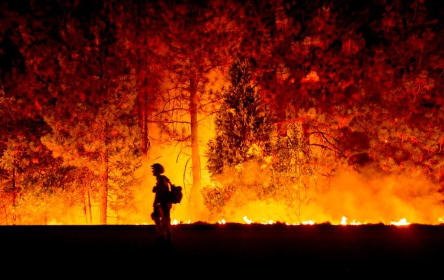
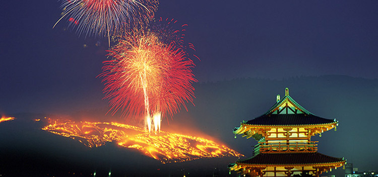

和喜欢的人在一起很幸福，吃到美味的食物很幸福，赶上回家的末班车很幸福，流连在喜欢的城市很幸福。连续熬夜加班项目却不见起色很痛苦，春节不能回家很痛苦，在心仪姑娘的注视下投篮8次一个都没进很痛苦，生离死别最痛苦。（注意这里是一个巨大的转折）所以！人们设定很多节日来纪念逝去的亲人，用几片薄纸、一段蜡头和不约而同的默契制造诸如孔明灯和河灯这样大规模的浪漫。于是乎，沉寂已久的森林莫名的兴奋了起来，燥起来的树啊草啊无法抒发他们胸中的情感——纷纷自燃了！
祭祖往往都是烧些纸钱，说些心酸的话，情到浓处失声痛哭。火光映着人们忽明忽暗的脸庞，空气中弥漫着纸钱燃烧的烟香。情难自控，火势也难控。祭祖节日常伴随着森林火灾，于是有关部门命令要求：祭祖不得出现明火，以防止出现森林大火这种“人间惨剧”。
就在全世界都用生命防止森林火灾时，有一个城市站出来了，他们烧山去了！！！
这个神奇而大胆的城市，就是日本千年古都奈良。大约从100多年前开始，每年成人节前一天的傍晚5点左右，奈良东大寺、兴福寺的僧侣们和春日大社神职人员就会约好：“走，我们烧山去”！在春日大社内点燃圣火的火种会被送到若草山附近，许多身穿制服的消防队员分持圣火的火把，点燃山上的层层枯草。随后奈良城外海拔342米的若草山就会燃起熊熊的大火，而奈良城内的所有与梦一起缠绵的霓虹灯都会熄灭，喧嚣的街道暂时让给黑暗，让万众可以远望那梦幻般的迷离景色。这就是当地著名的“烧山节”。
这个节日来源于一场争端：今天位于奈良市登大路町的“兴福寺”曾经与位于奈良市杂司町的“东大寺”之间有过一场领地纷争。围绕着边界线的问题，和尚们寸土必争，各不相让，纠纷逐步升级。1760年，由当时的政府官员出面，把作为权利纷争焦点的若草山一把大火烧掉。谁料这样一个近似野蛮的化解土地纠纷的办法，竟然演变成为一个传统的民俗节日，并在后世成为了一张招揽海外观光客的“旅游牌”。
很多人会思考一个问题：每年都这么烧，若草山能撑得住吗？有两句唐诗能解答这个问题——“野火烧不尽，春风吹又生”。若草山作为节日会场，在烧山期间是禁止入内的。而平时为了保护草坪，只有在春季和秋季的规定时间内才可入内。
1、每年成人节前一天是日本奈良市的烧山节，这天若草山会燃起红彤彤的火焰，好似在焚燃着积压下来的串串故事；
2、这个节日只是个例，爱护环境、预防森林火灾，人人有责！